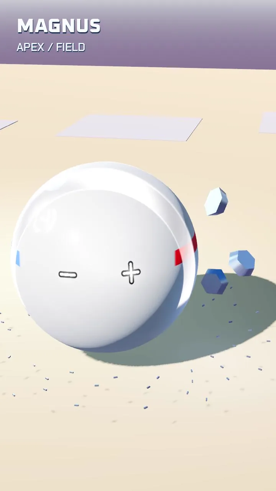

Making fields visible through matter
The latest MAGNUS study shows magnetic power through metal filings and moving alloy fragments. The field becomes visible through what it moves, giving this fighter a different shape language from stone, plasma and electrical discharge.
The first finished study also exposes the next problem: tiny filings disappear at phone size, and a bright shell makes the upper sigil hard to read during charge. The next comparisons focus on clearer alignment, local contrast and one purposeful snap toward a visible target.
This is a visual component study. It has not passed the full craft review and does not establish combat or player control. The reference fight remains the first milestone, and the gallery stays reserved for approved films.
Inside the work

